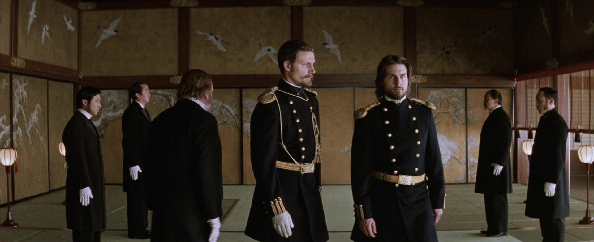
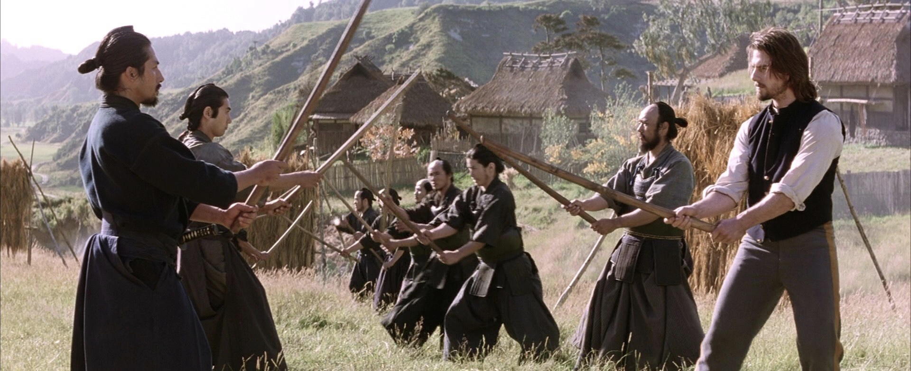
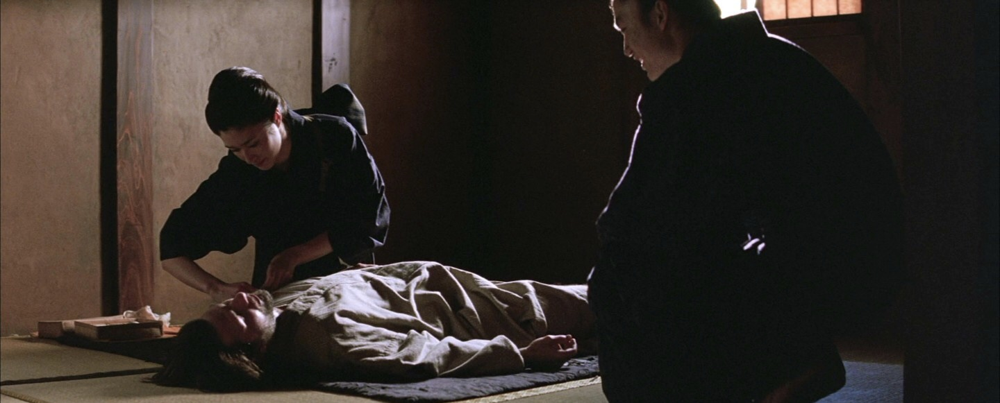

Free Download The Last Samurai (2003) Full Movie Dual Audio (Hindi-English). This is a dual audio movie and available in 480p & 720p quality. This movie is based on Action, Adventure & Drama Genre. It featuresSong Joong-Ki, Kim Tae-ri, Seon-kyu Jin as the main star cast of the movie. This movie is now dubbed in Hindi in 720p & 480p & 1080p MKV. This Print comes with very Good Audio and HDRip..
iWatchEverything.unaux.com is the best Website to To Download Hollywood Movies, Web Series, Tv Series, Hindi Dubbed And Multi Audio Movies. We Are Providing You Direct Secure Google Drive Link For Fast Downloading. Just Click On Download Button To Download All Movies In Few Clicks And Seconds. Also You Can Watch Movies Online.
The Last Samurai (2003)
110 min|Action, Adventure, Fantasy, Sci-Fi, Thriller|23 Apr 2021
Rating: 7.1 / 10 from 2,996 users
An American military advisor embraces the Samurai culture he was hired to destroy after he is captured in battle.
Director: Edward Zwick
Creator:John Logan (story), John Logan (screenplay), Edward Zwick (screenplay), Marshall Herskovitz (screenplay)
Actors: Ken Watanabe, Tom Cruise, William Atherton, Chad Lindberg
Download The Last Samurai (2003) (Hindi Dubbed) 480p – 720p – 1080p ~ iWatchEverything.unaux.com
Movie Info:
Full Name: The Last Samurai
Release Year: 2003
Country: Pakistan
Subtitles: N/A
Runtime: 2h 34m
Language: Dual Audio [English+Hindi]
Quality: 480p & 720p & 1080p
Size: 300mb & 950mb & 1.7gb
Plot/Storyline:
Former Army Captain Nathan Algren, a bitter alcoholic traumatized by the atrocities he committed during the American Indian Wars, is approached by his former commanding officer, Colonel Bagley, to train the newly created Imperial Japanese Army for Omura, a wealthy Japanese businessman and political figure who intends to use the army to suppress a rebellion of discontented samurai against Japan’s new emperor. Despite his hatred of Bagley, an impoverished Algren takes the job for the money, and is accompanied to Japan by his old friend, Sergeant Zebulon Gant. Upon arriving, Algren meets Simon Graham, a British translator and photographer with extensive knowledge of the samurai.
ScreenShots:
  
Helpful Right? If you are looking for The Last Samurai (2003) Movie Download in Hindi Dubbed then don’t worry. Below you can easily find the download link. Enjoy Our Service!!
Download The Last Samurai Dual Audio (Hindi-English)
Thanks for visiting iWatchEverything Website he hub for Hollywood Movies & TV Series for downloading The Last Samurai (2003) dual audio.